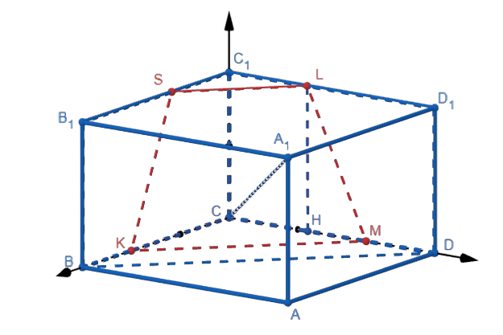

Основные методы решения стереометрических задач
Данный метод включает в себя содержание и координатного, и векторного методов одновременно. То есть при использовании координатно-векторного метода необходимо поместить тело в систему координат, задать необходимые векторы и определить их координаты, затем, используя известные формулы, вычислить величину, требуемую для решения задачи.
Координатно-векторный метод является универсальным методом решения стереометрических задач.
В основании правильной четырехугольной призмы ABCDA_1 B_1 C_1 D_1 лежит квадрат ABCD со стороной 6, боковое ребро равно 2√3. Точки K и L лежат соответственно на ребрах BC и C_1 D_1 так, что BK=C_1 L=2. Плоскость γ проходит через точки K и L и параллельна диагонали основания BD.
а) Докажите, что прямая AC_1 перпендикулярная плоскости γ.
б) Найдите объем пирамиды, основанием которой является сечение параллелепипеда плоскостью γ, а вершиной – точка A_1.
Перед тем как перейти к решению построим плоскость γ. По свойству боковых ребер правильной четырехугольной призмы 〖BB〗_1 DD_1 и 〖BB〗_1=DD_1, следовательно, 〖BB〗_1 DD_1 – параллелограмм, значит, B_1 D_1 BD. Проведем KMBD и SLB_1 D_1. По признаку параллельности трех прямых SLKM.
В основании правильной треугольной призмы ABCA_1 B_1 C_1 лежит треугольник ABC со стороной 18, боковое ребро равно 9. Точки E и F лежат соответственно на ребрах AB и B_1 C_1 так, что AE=B_1 F=6. Плоскость β проходит через точки E и F параллельно ребру AC. Докажите, что прямая BM перпендикулярная плоскости β, где точка M середина A_1 C_1.
В кубе ABCDA_1 B_1 C_1 D_1, ребро которого равно 10, точки K и L лежат на ребрах DD_1 и BC соответственно, причем KD:KD_1=1:4, а точка L – середина ребра BC. Найдите угол между прямыми KL и CB_1.